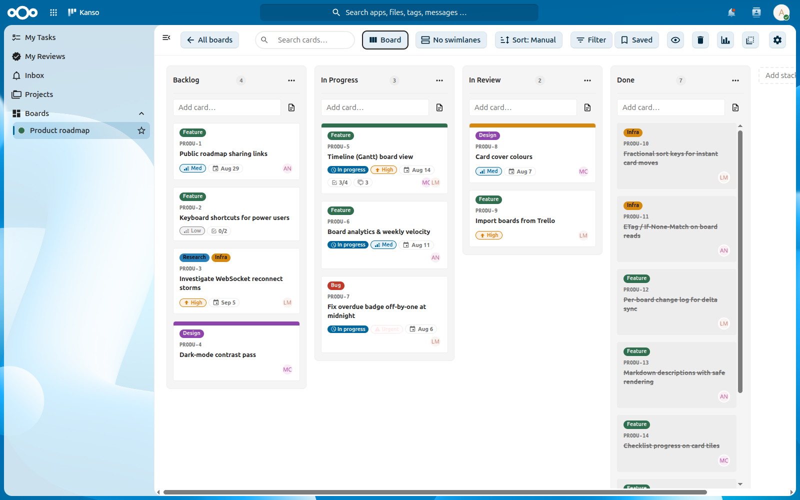
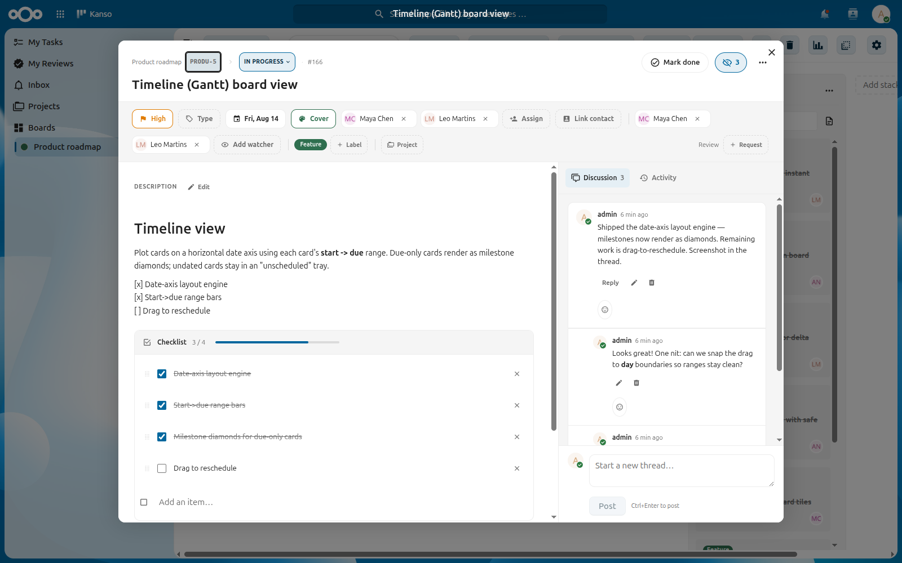
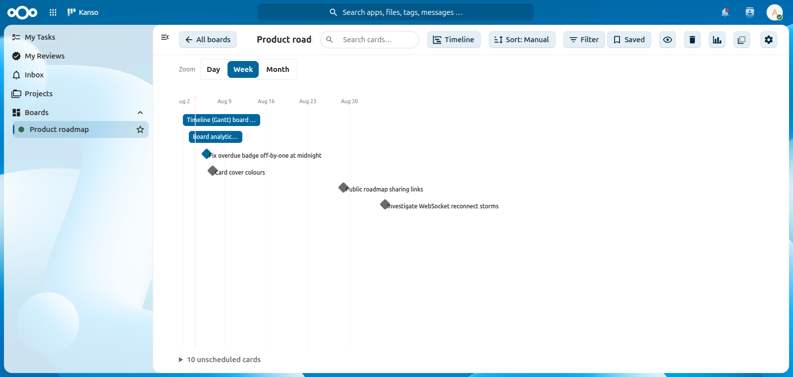
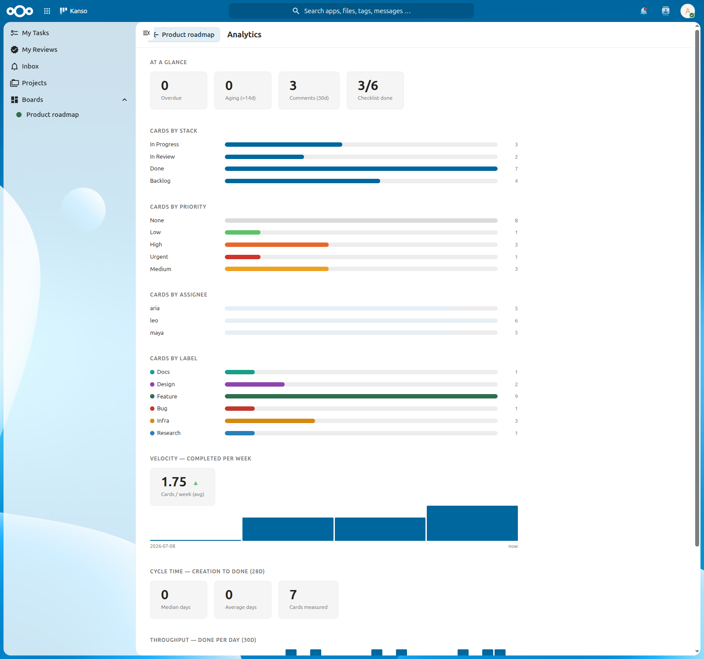

Fast, open-source kanban boards for Nextcloud
Instant drag & drop, payloads sized for large boards, realtime sync: a from-scratch kanban board that stays out of your way.
Kanso runs on your own Nextcloud server and stores its own data. It is free software under the AGPL — no lock-in, no per-seat pricing.
Requires Nextcloud 32–34 and PHP 8.2–8.3.

Why “Kanso”?
Kanso (簡素) is one of the seven principles of Japanese Zen aesthetics. It means simplicity: the deliberate elimination of clutter so that only what matters remains. That is the whole idea behind this app — a kanban board that is fast, uncluttered, and free. Just your work, on your own Nextcloud, laid out plainly.
What it does
Everything below ships today. The full, always-current feature list lives in the project README.
-
⚡ Fast by design
A card move is a single-row update, never a bulk renumber. Summary-only payloads, ETag caching and virtualized columns stay smooth past 2,000 cards.
-
🔄 Realtime sync
Live updates through notify_push when your server has it, with a light polling fallback everywhere else.
-
🗂️ Rich cards
Markdown descriptions, labels, due dates, assignees, priorities, checklists, parent ↔ child cards and threaded comments with @mentions. Plus file attachments, custom fields (text, number, date or a select list) and private reminders.
-
👥 Collaboration
Board sharing with per-user and per-group access control, plus watchers on a card, a thread or a whole board. A board can also be published read-only at a link that needs no Nextcloud account.
-
✅ Review workflow
Request a review, then approve or request changes. Customizable review types and an optional done-gate that holds a card until every review is approved.
-
🔁 Automation
Stack roles and WIP limits, recurring cards on RRULE schedules, auto-archive rules for cards that are done, and card templates to start from. Point a board at an IMAP mailbox and incoming mail lands as cards.
-
📊 Three views
Board, List and Timeline (Gantt) — switch per board, remembered per user. Cards plot on a date axis by start → due. Group the board into swimlanes by assignee, label or priority, and save a filter to come back to.
-
🧭 My Work & Projects
A cross-board hub for your tasks, the reviews waiting on you, and an inbox of mentions — plus Projects that collect cards across boards.
-
📈 Analytics
Per-board and per-project velocity, cycle time and throughput, with breakdowns by column, priority, assignee and label.
-
⌨️ Power-user UX
A command palette with full-text search across cards and comments, keyboard-first navigation, undo toasts and a trash with restore.
-
🔗 Migration & code links
Import a board from Deck, a Trello JSON export or a CSV — your originals are left untouched. Attach pull requests and issues to a card, with GitHub and Forgejo webhooks that move cards as work lands.
-
📅 In your calendar
Every board you can read shows up as a read-only CalDAV calendar of its due-dated cards, so they appear in Nextcloud Calendar and Tasks and on your phone. A board can also publish an .ics feed URL.
-
⏱️ Time tracking
Log time against a card with a note and see the total per card, or let a column automation start and stop the timer as work moves.
-
💾 Export & backup
Download any board as a zip with its attachments and import it back anywhere, or duplicate it in place. Administrators can schedule periodic backups of every board.
-
📱 Works offline
Kanso is an installable PWA: a service worker caches the app shell and the boards you have opened, so it starts with no network.
Screenshots
Cards, the timeline and board analytics.



Install it
Kanso is published on the Nextcloud App Store, so a server administrator can install it without touching the shell.
- In Nextcloud, open Apps as an administrator and search for Kanso — it is listed under Organization and Office & text.
- Select Download and enable.
- Open Kanso from the app menu and create your first board.
Prefer to install by hand? Every release ships a pre-built tarball on GitHub Releases — no Node or Composer needed on your server. The tarball and source-build steps are in the README installation guide.
Two optional server pieces make Kanso better: Nextcloud’s system cron drives recurring cards and auto-archiving, and the High Performance Backend turns on realtime updates. Kanso falls back to polling when the latter is absent.
- Nextcloud
- 32 – 34
- PHP
- 8.2 – 8.3
- Databases
- Postgres · MySQL · SQLite
- License
- AGPL-3.0-or-later
For tinkerers
-
Your language
Kanso follows your Nextcloud language automatically, and translations already ship for several. Adding one needs no code — see the translation guide.
-
AI access over MCP
An optional Model Context Protocol server lets MCP clients read and manage your boards through Kanso’s API, authenticating with a revocable Nextcloud app password. It is a separate artifact, not bundled into the installed app.
-
Contributions welcome
Bug reports and pull requests are both welcome. Start with the issue tracker and CONTRIBUTING.md.